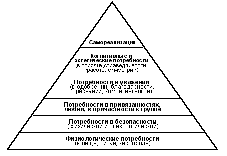

Задайте себе вопрос: "Я счастлив?", и если ваш ответ не устроит вас на все 100%, спросите себя: "А зачем я живу?". Если взглянуть на пирамиду человеческих потребностей (пирамида Маслоу), то мы увидим, что когда все потребности человека хотя бы частично удовлетворены (от базовых до социальных и нравственных), основным вопросом для него становится вопрос самореализации. Почему? Потому что когда у тебя уже есть все необходимое для нормальной жизни, хочется, чтобы в ней был еще и смысл (высшая польза), и любимое дело, и развитие. Это естественно. Однако большинство выбирает работу ориентируясь на то, где больше платят (35%), или на то, где есть возможность карьерного роста (29%), и далеко не для всех (24%) критерий любимого дела первичен (данные интернет-опроса на 4 марта 2008 г.). Это можно понять, беря в учет наш уровень жизни, но, как показывает практика, наибольшего успеха в профессиональном развитии и быстрее добиваются те люди, которые работают по профессии, максимально реализующей их потенциал. Они легче и с удовольствие учатся и быстро становятся высококлассными профессионалами, а профессионалы нужны всем. Но вот вопрос - как найти свое дело? Для тех, кто имеет выраженный талант или явную склонность к какой-то профессии, это очевидно, а что делать, когда это не очевидно? И потом, даже у тех, кто определился с профессией и уже давно работает по ней, часто возникает вопрос - как можно в этой профессии максимально реализовать себя? Чтобы получить ответы на эти вопросы, нужно понять самого себя и определить - что является "ядром" собственной личности. Из чего вообще состоит личность человека? Что такое "Я"? По каким законам оно развивается? Однозначно ответить на этот вопрос нельзя, потому что пытаясь описать все составляющие человеческого "Я", мы находим, что их бесконечное количество, а если мы попытаемся найти центральную составляющую, то обнаруживаем пустоту.... Поэтому в психологии существуют лишь модели, которые похожи больше на вектора, нежели на сетки координат, а часто могут быть использованы вообще только как метафоры. Но, тем не менее, если подобрать те модели, которые нужны для решения конкретной задачи, с их помощью вполне можно получить результат. Для того чтобы ответить на вопросы связанные с самореализацией и профессиональным призванием, нам нужно учесть три "слоя" "ядра" личности. Самый глубинный "слой", это ценности человека. Большая часть этого "айсберга" не осознается нами, но именно этот "айсберг" определяет то, что для нас важно, что нам нравится и чего нам хочется, и является фундаментом нашего мировоззрения и жизненными ориентирами. Количество ценностей не бесконечно, и внутри одной культуры в целом они совпадают у людей, но приоритеты ценностей у каждого человека свои. И самое важное - ценностному "слою" человека свойственно развиваться и обогащаться, и, если человек не уперся в "потолок своей среды обитания", то через год-другой его ценности могут измениться, и иногда в весьма значительной степени. (Тенденция развития ценностей и мировоззрения описана Клэром Грэйвзом в модели Спиральная Динамика.) Следующий глубинный "слой" ядра личности (который представляется скорее как параллельный ценностному "слою"), это способности или таланты человека. Выражение "талантливый человек" приучило нас думать, что это не про каждого. На самом деле таланты и способности есть у всех без исключения. Просто у кого-то они весьма развиты и очевидны, а у кого-то дремлют на уровне склонностей или предрасположенностей. Но, так как каждому из нас что-то дается легче и получается лучше - значит, каждый из нас имеет склонности к определенным талантам, и, значит, может их обнаружить, найти для них подходящий контекст и развить. То, что для человека естественно, всегда развивается быстро. Мечтатели, рационалисты и критики в душе, например, легко могут стать творцами, стратегами и аналитиками. И т.д. И третий "слой" ядра личности - это жизненный опыт. Его можно было бы назвать поверхностным, потому что он является результатом взаимодействия человека с жизненными обстоятельствами... Но в нем кроется столько привычного поведения, привычного мышления, привычных фокусов внимания, привычных убеждений о том, как все "должно быть" (которые, кстати, мы чаще защищаем, чем пересматриваем), что очень часто именно он - накопленный опыт - определяет течение нашей жизни. Да, это больше касается не глобальных решений, а, скорее, повседневных дел, но именно эти повседневные дела могут уводить нас от глобальных решений в привычную колею событий каждый день из года в год. Однако, хорошая новость заключается в том, что мы можем управлять своим опытом и сознательно структурировать его по своему желанию. И, что самое замечательное, мы можем его "планировать"! Конечно же, жизнь не даст нам гарантий, что наши планы свершатся в детальной точности, но в неизбежности изменений мы можем быть уверены. И мы можем решить, куда направить эту волну обстоятельств и выбрать, как ей воспользоваться. Егор Булыгин
Самореализация и профессия
Самореализация и "ядро" личности
О том, как устроен человек, можно говорить часами и писать книгами, однако ни одна библиотека этой информации не имеет смысла, если мы с вами не воспользуемся хотя бы одной крупицей ее, чтобы изменить свою жизнь к лучшему. Ведь, согласитесь, насколько прекраснее и увлекательнее мир, в котором люди делают то, что любят и умеют делать, знают, зачем живут, и развиваются личностно и духовно. ...Вам знакомы такие люди? Это параллельный мир, в который каждый может сделать шаг уже сейчас.
04.03.2008 г.